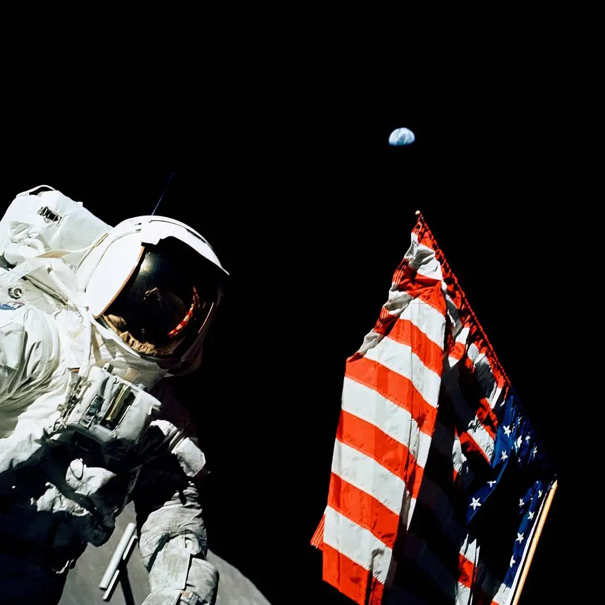
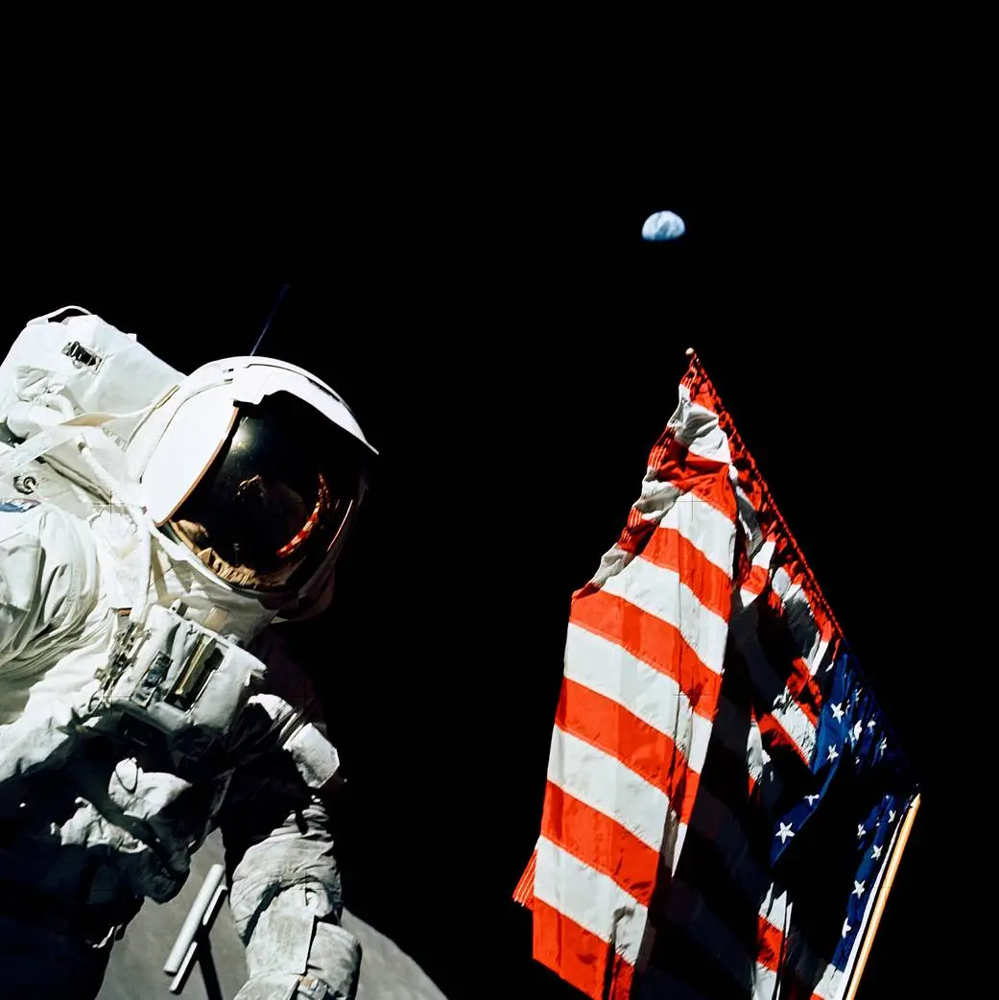

APOLLO 17
 

Launch: December 7th, 1972
Mission Duration: 12 Days, 13 Hours, 52 Minutes
Retired: December 19th, 1972
Apollo 17 was NASA’s final Moon mission, notable for including geologist Harrison Schmitt—the first scientist-astronaut to walk on the lunar surface. Alongside Eugene Cernan and Ronald Evans, the crew conducted three moonwalks in the Taurus-Littrow valley, gathered rock and soil samples, and deployed scientific instruments. Cernan, the last person to walk on the Moon, left a poignant message hoping for future return.